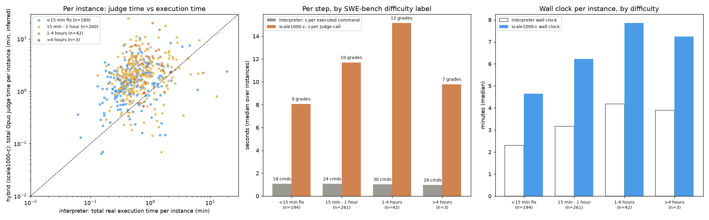
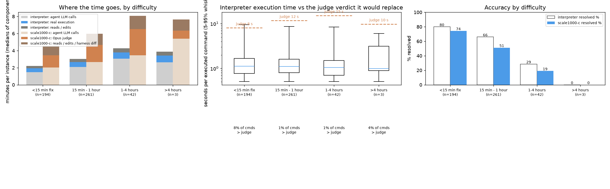

← back to the main dashboard · curation cost per rubric
SWE-bench Verified, all 500 instances held out · Haiku 4.5 agent · official test grading · canonical architecture: the router sends bash to the pod and code execution to the world model; routed commands are never run; the agent receives only the parsed rubric → reward verdicts as markdown. The 9/07 page (run-and-hide, full-text channel) is the historical record.
Each instance is a real GitHub issue in a Python repository; the agent must produce a patch that makes the hidden FAIL_TO_PASS tests pass without breaking PASS_TO_PASS. Resolved = the official SWE-bench harness verdict.
A Haiku 4.5 agent works in the repository by issuing bash commands. The settings differ only in what answers those commands:
Canonical implementation (these are real runs). Same four settings and the same router as the 9/07 page. The one difference from the 9/07 runs: a command the router sends to the world model is never run — earlier runs executed it and hid its output. Reads, searches and edits still run in the pod; the world model grades the real git diff against the retrieved rubrics and the agent receives only the parsed verdicts (reward, violated criteria, checked criteria), nothing else.
The router is a fixed rule, not a model. The command string is split on every bash separator (\n ; && || | &), heredoc bodies are dropped and wrapper prefixes (sudo, timeout N, VAR=x) skipped; a command is code execution if any segment's first word is an interpreter or test runner (python, pytest, tox, make, manage.py, runtests.py, bash, sh, …), a script or repo executable (./run.sh, /testbed/bin/x), or contains a substitution / xargs / find -exec that runs one. Everything else — cat, ls, grep, sed -i, git, heredoc writes — is a read or edit and goes to the interpreter. A mixed command such as cat > t.py <<EOF … EOF && python t.py counts as execution.
The CWM (Haiku 4.5 or Opus 5) reads the task, the agent's current diff and the command, grades the diff against the 12 rubrics retrieved from the mined library (nearest to the task, the files the diff touches and the command; in the hybrid arms a standing task criterion — “does the change implement what the issue asks?” — is added to the list) and returns the per-rubric verdict. A routed command never runs, so there is no output to leak; every trajectory is audited for leakage and the router is red-teamed (194 cases). No setting ever sees the hidden grading tests.
| arm | count | rate | also |
|---|---|---|---|
| interpreter · real · execution | 339/500 | 67.8% | submitted 500 · errors 0 |
| no code exec. · bash · only | 297/500 | 59.4% | submitted 500 · errors 0 |
| all-CWM · Opus · mined 10 | pending | ||
| all-CWM · Opus · mined 100 | 1/500 | 0.2% | submitted 500 · errors 0 |
| all-CWM · Opus · mined 1000 | pending | ||
| hybrid CWM · Haiku · task only | 298/500 | 59.6% | submitted 500 · errors 0 |
| hybrid CWM · Haiku · 1000 rubrics | pending | ||
| hybrid CWM · Opus · task only | 309/500 | 61.8% | submitted 500 · errors 0 |
| hybrid CWM · Opus · 10 rubrics | 297/500 | 59.4% | submitted 500 · errors 0 |
| hybrid CWM · Opus · 100 rubrics | 303/500 | 60.6% | submitted 500 · errors 0 |
| hybrid CWM · Opus · 1000 rubrics | 285/499 | 57.1% | submitted 499 · errors 0 |
| hybrid CWM · Opus · 12 random | pending | ||
| simulator · Haiku · pure | 253/500 | 50.6% | submitted 500 · errors 0 |
Wall-clock per instance from the first command to the last (minutes), from the per-command timing records of each pod. Arms marked Low key were re-run on a different API organisation after rate limiting; its agent-model calls took 2.7 s against 1.4 s on the key the other arms used (~85 calls per instance, so about +2 min per instance). Accuracy is unaffected; these bars are not directly comparable on wall clock until re-run on the same key.
Wall clock is calls × seconds per call. This chart isolates the second factor: the time the agent waits per step, which contains the model call and, in the world-model arms, the judge verdict; in the interpreter it contains the real execution. An arm that is slower here costs more per step; an arm that is slower only in wall clock took more steps.
Interpreter arm: time of each executed command from the pod timing records. Hybrid arms (scale1000-c, nolib-c): routed commands never run; the judge latency is inferred per instance from the harness's own git diff that precedes every grade (next command start − end of that diff − the instance's median agent-call latency). Difficulty = the SWE-bench Verified annotation.

| bucket | n | interp wall | exec cmds | s / exec cmd | exec total | scale1000-c wall | scale1000-c grades | scale1000-c s / judge call | scale1000-c judge total | nolib-c wall | nolib-c grades | nolib-c s / judge call | nolib-c judge total |
|---|---|---|---|---|---|---|---|---|---|---|---|---|---|
| difficulty: <15 min fix | 194 | 2.3 min | 18 | 1.1 s | 0.5 min | 4.7 min | 9 | 8.1 s | 1.4 min | 3.9 min | 9 | 2.7 s | 0.5 min |
| difficulty: 15 min - 1 hour | 261 | 3.2 min | 24 | 1.1 s | 0.6 min | 6.2 min | 10 | 11.7 s | 2.0 min | 5.2 min | 9 | 5.1 s | 0.8 min |
| difficulty: 1-4 hours | 42 | 4.2 min | 30 | 1.0 s | 0.8 min | 7.9 min | 12 | 15.2 s | 3.1 min | 6.3 min | 9 | 6.2 s | 1.2 min |
| difficulty: >4 hours | 3 | 3.9 min | 28 | 1.0 s | 0.8 min | 7.2 min | 7 | 9.8 s | 0.9 min | 6.6 min | 4 | 1.9 s | 0.5 min |
| repo: astropy/astropy | 22 | 2.8 min | 20 | 1.2 s | 0.6 min | 5.8 min | 12 | 11.6 s | 2.2 min | 4.9 min | 9 | 5.1 s | 0.8 min |
| repo: django/django | 231 | 2.9 min | 23 | 1.0 s | 0.5 min | 5.9 min | 11 | 10.3 s | 1.9 min | 4.7 min | 10 | 3.3 s | 0.6 min |
| repo: matplotlib/matplotlib | 34 | 3.6 min | 22 | 1.5 s | 1.1 min | 5.6 min | 6 | 12.7 s | 1.4 min | 5.5 min | 5 | 6.4 s | 0.4 min |
| repo: mwaskom/seaborn | 2 | 5.2 min | 40 | 1.3 s | 1.1 min | 8.0 min | 13 | 15.4 s | 3.4 min | 6.3 min | 6 | 12.6 s | 1.5 min |
| repo: pallets/flask | 1 | 1.1 min | 11 | 0.9 s | 0.2 min | 3.8 min | 10 | 6.3 s | 1.1 min | 29.9 min | 0 | nan s | 0.0 min |
| repo: psf/requests | 8 | 2.1 min | 15 | 0.6 s | 0.5 min | 5.5 min | 9 | 11.9 s | 1.9 min | 5.7 min | 8 | 9.4 s | 0.9 min |
| repo: pydata/xarray | 22 | 3.7 min | 23 | 2.8 s | 1.6 min | 6.3 min | 9 | 15.3 s | 2.3 min | 5.2 min | 9 | 6.9 s | 1.2 min |
| repo: pylint-dev/pylint | 10 | 4.5 min | 30 | 1.3 s | 1.4 min | 5.1 min | 10 | 15.7 s | 2.0 min | 5.5 min | 8 | 5.7 s | 1.0 min |
| repo: pytest-dev/pytest | 19 | 2.5 min | 19 | 0.8 s | 0.5 min | 3.9 min | 8 | 8.7 s | 1.2 min | 3.8 min | 8 | 2.7 s | 0.5 min |
| repo: scikit-learn/scikit-learn | 32 | 2.1 min | 16 | 1.5 s | 0.6 min | 4.1 min | 10 | 8.3 s | 1.3 min | 4.0 min | 10 | 2.8 s | 0.5 min |
| repo: sphinx-doc/sphinx | 44 | 4.0 min | 26 | 1.4 s | 0.8 min | 6.5 min | 10 | 11.8 s | 2.0 min | 5.7 min | 10 | 5.1 s | 1.0 min |
| repo: sympy/sympy | 75 | 3.0 min | 27 | 1.1 s | 0.5 min | 6.0 min | 7 | 11.3 s | 1.7 min | 4.7 min | 8 | 4.7 s | 0.6 min |
Medians over instances. A real execution takes about one second regardless of difficulty; an Opus verdict takes 8 to 15 s and grows with difficulty because the diff it reads grows, so the world model's per-step cost rises exactly where execution stays cheap.

| difficulty | n | interp wall | agent calls | execution | reads/edits | exec cmd p50 / p90 / p99 | % cmds longer than a verdict | scale1000-c wall | agent calls | judge | reads/edits | interp resolved | scale1000-c resolved |
|---|---|---|---|---|---|---|---|---|---|---|---|---|---|
| <15 min fix | 194 | 2.3 min | 1.5 | 0.5 | 0.3 | 1.1 / 4.5 / 15 s | 7.6% | 4.7 min | 2.0 | 1.4 | 1.1 | 79.9% | 74.2% |
| 15 min - 1 hour | 261 | 3.2 min | 2.1 | 0.6 | 0.4 | 1.1 / 3.4 / 14 s | 1.3% | 6.2 min | 2.7 | 2.0 | 1.3 | 65.9% | 51.2% |
| 1-4 hours | 42 | 4.2 min | 3.0 | 0.8 | 0.5 | 1.0 / 2.7 / 11 s | 0.6% | 7.9 min | 3.5 | 3.1 | 1.6 | 28.6% | 19.0% |
| >4 hours | 3 | 3.9 min | 2.6 | 0.8 | 0.5 | 1.0 / 4.7 / 22 s | 4.0% | 7.2 min | 5.4 | 0.9 | 1.3 | 0.0% | 0.0% |
Minutes are medians of each component per instance. Harder tasks cost the interpreter more agent calls, not slower execution: its executed commands stay at ~1 s median (p90 3-5 s) in every bucket, and only 1-8% of them run longer than the verdict that would replace them. Accuracy falls with difficulty for both arms and the hybrid is below the interpreter in every bucket.
Every agent command classified by the routing rule (inner ring: interpreter vs code execution) and by type (outer ring). "Write file" = heredoc / echo redirects; "edit / file ops" = sed -i, mv, cp…; "run tests" = pytest and friends; "python script" = python x.py; "inline python" = python -c / heredoc.
Instance pytest-dev__pytest-5809, the same task under both settings. Colours: agent command and reasoning, interpreter real output, CWM world-model text, withheld nothing returned; rc = the exit code the agent saw.
$ find /testbed -type f -name "*.py" | grep -E "(pastebin|test)" | head -20$ find /testbed -type f -name "pastebin.py"$ cat /testbed/src/_pytest/pastebin.py$ find /testbed -type f -name "*.py" -path "*/test*" | xargs grep -l "pastebin" 2>/dev/null$ cat /testbed/testing/test_pastebin.py$ cat > /tmp/test_pastebin_fix.py << 'EOF'
#!/usr/bin/env python
"""Test script to verify pastebin lexer change"""
import sys
import os
# Add testbed to path
sys.path.insert(0, '/testbed/src')
from _pytest import pastebin
# Test the lexer parameter used in the pastebin service
def test_lexer_parameter():
"""Check that the create_new_paste function uses 'text' as lexer"""
import inspect
source = inspect.getsource(pastebin.create_new_paste)
print("Source code of create_new_paste:")
print(source)
# Check if it contains the old lexer setting
if 'python3' in source or '"python"' in source:
print("\n❌ FAIL: Still using python/python3 lexer")
return False
# Check if it uses text lexer
if '"text"' in source or "'text'" in source:
print("\n✓ PASS: Using 'text' lexer")
return True
print("\n? UNKNOWN: Could not determine lexer")
return False
if __name__ == "__main__":
result = test_lexer_parameter()
sys.exit(0 if result else 1)
EOF
python /tmp/test_pastebin_fix.py$ cd /testbed && python /tmp/test_pastebin_fix.py$ cd /testbed && python -c "
import sys
sys.path.insert(0, '/testbed/src')
from _pytest import pastebin
import inspect
source = inspect.getsource(pastebin.create_new_paste)
print('=== Current source code ===')
print(source)
"$ cd /testbed && python -c "import sys; sys.path.insert(0, 'src'); from _pytest import pastebin; print('OK')"$ python --version$ cd /testbed && python3 << 'EOF'
import sys
sys.path.insert(0, 'src')
from _pytest import pastebin
print("Successfully imported pastebin")
EOF$ cd /testbed && python3 << 'EOF' 2>&1
import sys
sys.path.insert(0, 'src')
try:
from _pytest import pastebin
print("Successfully imported pastebin")
except Exception as e:
print(f"Error: {e}")
import traceback
traceback.print_exc()
EOF$ ls -la /testbed/src/_pytest/pastebin.py$ cd /testbed && sed -n '65,75p' src/_pytest/pastebin.py$ cd /testbed && sed -n '65,80p' src/_pytest/pastebin.py$ cd /testbed && sed -n '65,90p' src/_pytest/pastebin.py$ cd /testbed && cat > /tmp/fix_pastebin.py << 'EOF'
import sys
# Read the pastebin.py file
with open('src/_pytest/pastebin.py', 'r') as f:
content = f.read()
# Replace the lexer line
# Old: "lexer": "python3" if sys.version_info[0] >= 3 else "python",
# New: "lexer": "text",
old_line = ' "lexer": "python3" if sys.version_info[0] >= 3 else "python",'
new_line = ' "lexer": "text",'
if old_line in content:
content = content.replace(old_line, new_line)
print("✓ Successfully replaced lexer line")
else:
print("✗ Could not find exact line to replace")
print("Looking for:", repr(old_line))
# Try to find what's actually there
lines = content.split('\n')
for i, line in enumerate(lines):
if 'lexer' in line and 'python' in line:
print(f"Found at line {i+1}: {repr(line)}")
# Write the file back
with open('src/_pytest/pastebin.py', 'w') as f:
f.write(content)
print("✓ File written successfully")
EOF
python /tmp/fix_pastebin.py$ cd /testbed && python /tmp/fix_pastebin.py 2>&1 | cat$ cd /testbed && sed -i 's/"lexer": "python3" if sys.version_info\[0\] >= 3 else "python",/"lexer": "text",/' src/_pytest/pastebin.py && echo "File modified successfully" && head -100 src/_pytest/pastebin.py | tail -30$ cd /testbed && grep -A 5 '"code": contents,' src/_pytest/pastebin.py$ cd /testbed && grep -n "python3" testing/test_pastebin.py$ cd /testbed && sed -n '120,135p' testing/test_pastebin.py$ cd /testbed && cat src/_pytest/pastebin.py$ cd /testbed && git diff src/_pytest/pastebin.py$ cd /testbed && git diff src/_pytest/pastebin.py > patch.txt && cat patch.txt$ cd /testbed && wc -l patch.txt && head -20 patch.txt && tail -5 patch.txt$ echo COMPLETE_TASK_AND_SUBMIT_FINAL_OUTPUT && cat /testbed/patch.txt$ find /testbed -type f -name "*.py" | grep -E "pastebin" | head -20$ cat /testbed/src/_pytest/pastebin.py$ cat /testbed/testing/test_pastebin.py$ cd /testbed && python -c "
import sys
if sys.version_info[0] >= 3:
from urllib.parse import urlencode
else:
from urllib import urlencode
# Test the current params with python3 lexer
params = {
'code': b'test content',
'lexer': 'python3',
'expiry': '1week',
}
print('Current params:', params)
print('Would send:', urlencode(params).encode('ascii'))
"$ python --version$ grep -n "lexer" /testbed/src/_pytest/pastebin.py$ cat /testbed/src/_pytest/pastebin.py | head -90$ cat > /tmp/fix_pastebin.py << 'EOF'
import sys
# Read the file
with open('/testbed/src/_pytest/pastebin.py', 'r') as f:
content = f.read()
# Replace the lexer line
old_line = ' "lexer": "python3" if sys.version_info[0] >= 3 else "python",'
new_line = ' "lexer": "text",'
if old_line in content:
content = content.replace(old_line, new_line)
with open('/testbed/src/_pytest/pastebin.py', 'w') as f:
f.write(content)
print("Fixed: Changed lexer from 'python3'/'python' to 'text'")
else:
print("ERROR: Could not find the expected line in the file")
sys.exit(1)
EOF
python /tmp/fix_pastebin.py$ grep -n "lexer" /testbed/src/_pytest/pastebin.py$ sed -i 's/"lexer": "python3" if sys.version_info\[0\] >= 3 else "python",/"lexer": "text",/' /testbed/src/_pytest/pastebin.py$ grep -n "lexer" /testbed/src/_pytest/pastebin.py$ sed -n '75,90p' /testbed/src/_pytest/pastebin.py$ grep -n "lexer" /testbed/testing/test_pastebin.py$ sed -n '120,135p' /testbed/testing/test_pastebin.py$ cd /testbed && python -m pytest testing/test_pastebin.py::TestPaste::test_create_new_paste -xvs 2>&1 | head -50$ cd /testbed && python -m pytest testing/test_pastebin.py::TestPaste::test_create_new_paste -v 2>&1$ cd /testbed && python -m pytest testing/test_pastebin.py -v$ cd /testbed && python -m pytest testing/test_pastebin.py::TestPaste::test_create_new_paste -xvs 2>&1 | cat$ cd /testbed && python << 'EOF'
import sys
sys.path.insert(0, '/testbed/src')
from _pytest.pastebin import create_new_paste
# Mock the urlopen function
original_urlopen = None
if sys.version_info < (3, 0):
import urllib
original_urlopen = urllib.urlopen
else:
import urllib.request
original_urlopen = urllib.request.urlopen
calls = []
def mocked_urlopen(url, data):
calls.append((url, data))
class DummyFile(object):
def read(self):
return b'View <a href="/raw/3c0c6750bd">raw</a>.'
return DummyFile()
if sys.version_info < (3, 0):
import urllib
urllib.urlopen = mocked_urlopen
else:
import urllib.request
urllib.request.urlopen = mocked_urlopen
# Test the function
result = create_new_paste(b"full-paste-contents")
print("Result:", result)
print("Number of calls:", len(calls))
if calls:
url, data = calls[0]
print("URL:", url)
print("Data:", data)
print("Data decoded:", data.decode())
if b"lexer=text" in data:
print("SUCCESS: lexer=text found in the request!")
else:
print("ERROR: lexer=text not found in the request!")
if b"lexer=" in data:
# Try to extract$ cd /testbed && python3 -c "
import sys
sys.path.insert(0, '/testbed/src')
print(open('/testbed/src/_pytest/pastebin.py').read()[2100:2300])
"$ cat /testbed/src/_pytest/pastebin.py$ cd /testbed && git diff src/_pytest/pastebin.py$ cd /testbed && cat > /tmp/test_fix.py << 'EOF'
import sys
import os
# Add the src directory to the path
sys.path.insert(0, '/testbed/src')
# Now let's verify the fix
from _pytest import pastebin
import inspect
# Get the source code of create_new_paste
source = inspect.getsource(pastebin.create_new_paste)
# Check if it uses 'lexer': 'text'
if '"lexer": "text"' in source:
print("✓ SUCCESS: The lexer has been changed to 'text'")
print("\nRelevant code snippet:")
for i, line in enumerate(source.split('\n')):
if 'lexer' in line:
print(f" Line: {line}")
else:
print("✗ FAILED: The lexer has NOT been changed to 'text'")
print("\nCode contains:")
for i, line in enumerate(source.split('\n')):
if 'lexer' in line:
print(f" Line: {line}")
sys.exit(1)
EOF
python /tmp/test_fix.py$ grep -A 5 '"code": contents' /testbed/src/_pytest/pastebin.py$ cd /testbed && git diff$ cd /testbed && git diff src/_pytest/pastebin.py > /tmp/patch.txt && cat /tmp/patch.txt$ cd /testbed && git diff -- src/_pytest/pastebin.py > patch.txt && cat patch.txt$ wc -l patch.txt && head -20 patch.txt$ echo COMPLETE_TASK_AND_SUBMIT_FINAL_OUTPUT && cat patch.txtOn-policy mining from the SWE-Gym real-bug on-policy mining (see the 9/07 page for the curation cost table): the same Haiku agent runs on pool tasks with real execution, every failed rollout is distilled into one lesson by Opus, lessons are deduplicated and cut into the 10 / 100 / all libraries. No CWM grading during mining and no precision filter, so the per-rubric cost is the "cheap" recipe of the SWE-bench page. Prices: Opus 5 $5 / $25 per M tokens, Haiku 4.5 $1 / $5, GKE Spot ≈ $0.045 per node-hour.
| item | value |
|---|---|
| pool rollouts (Haiku interpreter agent, real execution) | pending |
| median agent cost per rollout | pending |
| failures distilled (Opus, one call per failure, ~$0.09 each) | pending |
| lessons after dedup at 0.90 = library size | pending |
| cost per kept rubric (agent + distillation + pods) | pending |